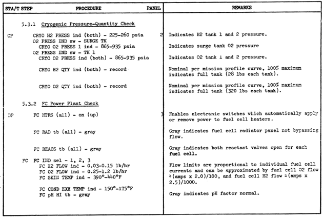

The internal systems in Project Apollo are simulated with Radu Poenaru's System & Panel SDK, but only the "system" part is used, not the panel part. The panels are still managed by the Project Apollo spacecrafts themself together with the toggleswitch library (toggleswitch.cpp). Only a few hydraulical and electrical systems of the CSM EPS (Electrical Power System) and ECS (Environmental Control System) are integrated at the moment.
The following documentation describes the systems and components as they are modelled in Project Apollo with the PanelSDK. It's no documentation of the real Apollo systems. Of course both systems are similar and should behave identical as much as possible, but there are differences in internal details.
Most of the informations used for the internal systems came from the following references:
Command and Service Module (CSM)
The following diagram shows the internal systems of the Command and Service Module (CSM) as modelled with the PanelSDK. These components are defined in the "saturncsmsystems.cfg" file in the config folder.

Operational Procedures
This section provides step-by-step examples and instructions how to use the internal systems. Hopefully the user gets a better feeling how to work with the EPS and ECS. It is assumed that the spacecraft is in a "stable condition" without flying manoeuvers, for example during Trans Lunar Coast and you can use time acceleration up to 1000 so that the internal systems have reasonable reaction times.
CSM cryogenic tank and fuel cell check
During normal operations the cryo tanks and fuel cells should operate as descriped in the original Apollo documentation. The following procedures are from the Apollo-Soyuz test project. Operations handbook command/service/docking modules
(CSM 119/DM 1): Operational procedures reference issue (http://ntrs.nasa.gov/archive/nasa/casi.ntrs.nasa.gov/19750004933_1975004933.pdf)

CSM H2 cryogenic tank pressurization
During normal operations cryogenic hydrogen from the cryo tanks is consumed by the fuel cells, so for this procedure it is necessary that the fuel cells are turned on and all cryo tank heaters and fans are switched to AUTO. The cyro tank fans and heaters then maintain the pressure in the tanks.
- Switch to time acceleration 1000. Monitor the H2 PRESSURE 1/2 meters, they should slowly drop to 225 psi, then increase to 260 psi and so forth.
- Switch the H2 HEATERS 2 switch and the H2 FANS 2 switch to OFF (center position). After a couple of hours you can see that the H2 tank 1 gets still repressurized while the pressure in H2 tank 2 decreases below 200 psi. Furthermore the spacecraft consumes more hydrogen from tank 1 because of the higher pressure so the H2 QUANTITY 1 meter decreases faster than the H2 QUANTITY 2 meter.
- Switch the H2 FANS 2 switch to ON (down position). The pressure in H2 tank 2 increases continuously without stopping, so you can overpressure the tank (but it doesn't explode at the moment...). Switch the H2 FANS 2 switch back to OFF if you have enough pressure.
- Switch the H2 HEATERS 2 switch and the H2 FANS 2 switch back to AUTO (up position). Now the tanks are operated automatically again. Please notice that they now doesn't operate "synchronously" as before.
CSM fuel cell shutdown and restart
During normal operations all fuel cells are running and have a load of about 20 A at the moment. Unlike in reality we can shutdown and restart the fuel cells at any time.
- Switch to time acceleration 100. Switch the FUEL CELL INDICATOR to position 1. You can monitor a hydrogen and oxygen flow above 0 lb/hr on the FUEL CELL FLOW H2/O2meters and a FUEL CELL MODULE SKIN TEMP of above 400 °F.
- Switch the FUEL CELL REACTANTS 1 switch to OFF (down position) and back to center position. Now fuel cell 1 is down, the FUEL CELL REACTANTS 1 indicator changes to striped-line indication, both flows are 0 lb/hr, but the fuel cell skin temperature remains almost unchanged because the fuel cell temperature is still maintained by the fuel cell heaters.
- Switch the FUEL CELL HEATERS 1 switch to OFF (down position). The fuel cell skin (and condenser exhaust) temperature decreases slowly. Wait until it drops below 300 °F (use time acceleration 1000, if you are impatient...).
- Switch the FUEL CELL REACTANTS 1 switch to ON (up position). Unfortunatly the fuel cell does not start, because the skin temperature is below 300 °F.
- Switch the FUEL CELL HEATERS 1 switch to up position. The fuel cell skin temperature increases slowly. After 300 °F is reached, the fuel cell turns on, the flows are normal again and the skin temperature increases quickly to the old value. The fuel cell is running normally again, switch the FUEL CELL REACTANTS 1 switch back to center position.
CSM fuel cell radiator emergency bypass
During normal operations no fuel cell emergency bypass is necessary. But if only one fuel cell is running at a load of about 20 A, you have to bypass some of the radiators so that the coolant temperature is not too low.
- Switch to time acceleration 100. Switch the FUEL CELL INDICATOR to position 1. Switch the FUEL CELL REACTANTS 2 and 3 switches to OFF (down position). The FUEL CELL REACTANTS 2 and 3 indicators change to striped-line indication.
- Wait some time (use time acceleration 1000, if you are impatient...), then the FC RAD TEMP LOW indicator changes to striped-line indicating a coolant temperature below -30°F.
- Switch the FUEL CELL RADIATORS 1 switch to EMER BYPASS (down position) and back to center position. The FUEL CELL RADIATORS 1 indicator changes to striped-line indication. After a short time the FC RAD TEMP LOW indicator changes back to gray indicating a normal coolant temperature. You are now in "emergency mode".
- Monitor fuel cell 2 and 3 by switching the FUEL CELL INDICATOR to position 2 and 3. The flows are 0 lb/hr of course and the FC RAD TEMP LOW indicator shows striped-line indication because the radiators of the other fuel cells are not bypassed. Switch the FUEL CELL INDICATOR back to position 1.
- Switch the FUEL CELL RADIATORS 1 switch to NORMAL (up position) and back to center position. Switch the FUEL CELL REACTANTS 2 and 3 switches to ON (up position) and then back to center position. You are now back in "normal mode". The FC RAD TEMP LOW indicator should show gray indication again.